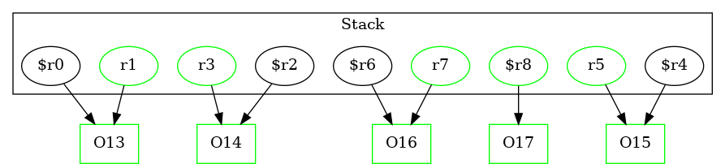

13 : $r0 = new Test2Node
13 : specialinvoke $r0.|Test2Node: void |init|()|()
13 : r1 = $r0
14 : $r2 = new Test2Node
14 : specialinvoke $r2.|Test2Node: void |init|()|()
14 : r3 = $r2
15 : $r4 = new Test1A
15 : specialinvoke $r4.|Test1A: void |init|()|()
15 : r5 = $r4
16 : $r6 = new Test1B
16 : specialinvoke $r6.|Test1B: void |init|()|()
16 : r7 = $r6
17 : $r8 = new Test2Node
17 : specialinvoke $r8.|Test2Node: void |init|()|() -> class soot.jimple.internal.JInvokeStmt
17 : r1.|Test2Node: Test2Node f| = $r8
18 : staticinvoke |Test2: void bar(Test2Node,Test2Node)|(r1, r3)
19 : virtualinvoke r5.|Test1A: void baz(Test2Node,Test2Node)|(r1, r3)
20 : virtualinvoke r7.|Test1A: void baz(Test2Node,Test2Node)|(r1, r3)
21 : return r1
